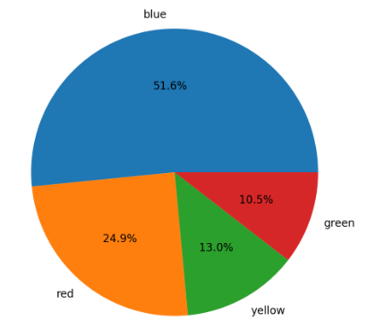

專有名詞解析——殘差頁面
April 30, 2024
迴歸必須滿足的四個假設：1. 線性關係2. 獨立性3. 常態性4. 同質變異性
關於違反假設的解決方法：
1. if 違反線性關係(以下特徵:非随机分布的残差, 離散度随预测值变化而变化, 有清晰的曲线或模式) (numerical variable):
解決方法：考慮增加自變數的多項式項目:(需要添加更多的特征来捕捉数据中的非线性关系。)，或者使用非線性迴歸模型
［常見問題］為什麼要轉換類別型變數為連續型？
此功能提供您若是需要查看某類別變數和其他數值型變數的散佈圖時，需進行轉換，且並不影響後續的模型配適。
3、圓餅圖:
用於視覺化類別型變數的分布情況。
4、直方圖:
用於視覺化數值型變數的分布情況。

5、散佈圖(scatter plot):
用於視覺化兩個變數之間相互關係。

6、散佈矩陣 (scatter matrix):
用於視覺化多個數值型變數之間相互關係的矩陣圖表。

7、相關矩陣 (correlation matrix):
顯示不同變數之間相關性的矩陣，通常是用相關係數表示。

8、皮爾森積動差相關係數(Pearson product-moment correlation coefficient):
測量兩變項間關聯的方向和程度的一個量化數值，其值坐落於-1至1之間。